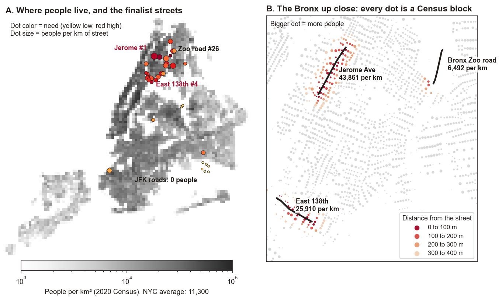
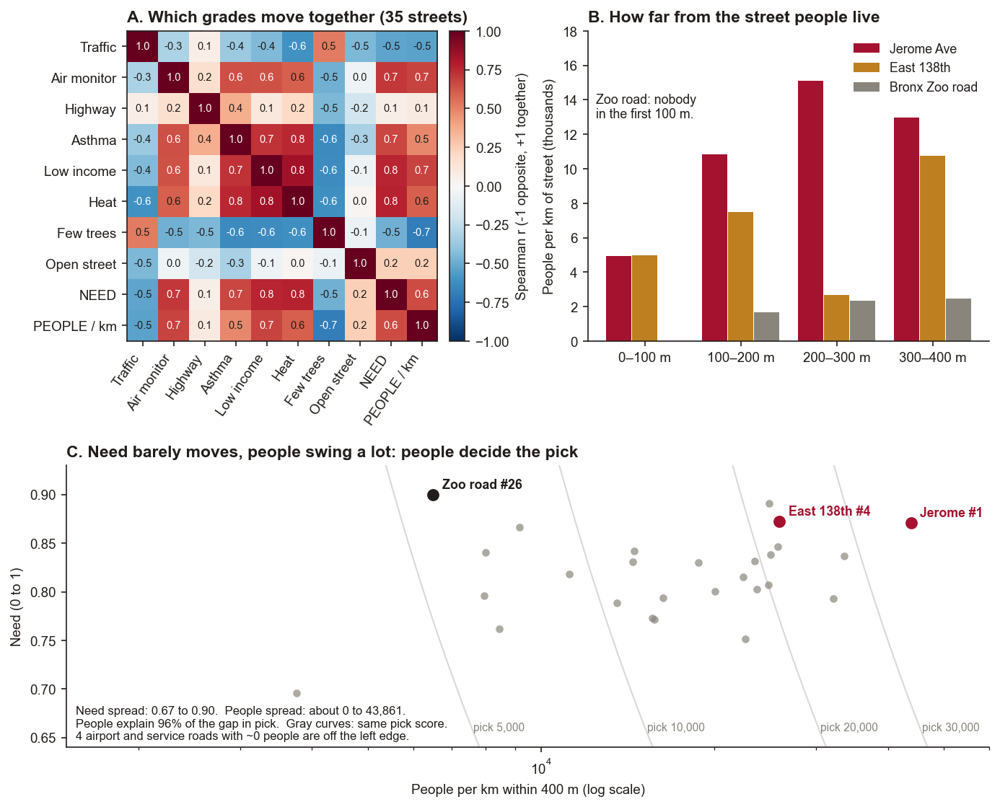

Outside the Line · Datathon 2026
How we worked it out, from the headline to the plan
This is the whole thing start to finish, in the order we figured it out. Each step starts with Cody and Daniel talking it over, then a “kid version” in one line, then the charts and tests that prove it. The nerdy details are still there if you want them. The data list is at the very bottom.
The whole story in six lines
What we asked. The city started charging cars $9 to drive into lower Manhattan. The air there got about 22% cleaner. But did the dirty air just move to the Bronx? One air sensor by the Deegan highway went up.
First check. Did drivers sneak around the fee through the Bronx? Nope. Bronx bridge traffic didn’t grow any faster than bridges far away.
Second check. Is it just the weather? Nope. Houston has no fee and its air got cleaner. But the city's own roadside monitors went up next to big roads, like the Cross Bronx and the Williamsburg Bridge. The Deegan spot jumped too, about 6 times more than the rest of the South Bronx. So the trouble is right next to the highway, not up in the sky.
The problem. East 138th Street is one of the worst streets in all of NYC to breathe on: 22nd out of 33,785 pieces of street, and 4th once you count how many people live there.
The fix. Plant trees on the six blocks that have the fewest.
The big dream. Trees now. Later, put a park right on top of the Deegan, like Dallas did with Klyde Warren Park.
Step 1 of 7 · The headline
It started with a headline: “22% cleaner.” Cleaner where?
Cody: Yo, the news says the new car fee made the air 22% cleaner. We live in the Bronx though. Is our air cleaner?
Daniel: Hold up, read the fine print. That 22% is only inside the fee zone, at the busiest hours. For the whole city it’s way smaller.
Cody: So Manhattan got the good stuff. What about us?
Kid version: The fee cleaned Manhattan’s air. We wanted to know if the Bronx got the leftovers.
Q1. Did the 22% headline hide a mixed picture, day by day or at peak hours?
Yes. The 22% is real, but it only covers the paid zone.
- The 22% compares daily peak PM2.5 inside the zone with a model of the same year with no toll: −3.05 on a 13.8 baseline (Fraser et al.).
- Across all five boroughs the drop was only −1.07. Across the wider metro area it was −0.70.
- A second study checked six spots. Only one change was significant: Queensboro, −9.08%. Williamsburg went up 6.30%, the Cross Bronx up 3.74%, Broadway at W 35th up 2.46%. With six tries, there is about a 26% chance that at least one comes out “significant” by luck alone.
Slide 1. Fraser’s map of the fee zone
- What it shows
- A published map of fine-particle pollution (PM2.5) after the fee started in January 2025.
- How to read it
- The 22% drop is inside the paid zone only, Manhattan below 60th St. The map says nothing about the Bronx.
- So we should
- Trust that the fee cleaned the zone, then ask what happened just outside it.
Slide 1. The three-row table
- What it shows
- One number per place: the paid zone, the average of 19 South Bronx sensors, and the one sensor at the Deegan.
- How to read it
- A plus sign means dirtier air in 2025 than in 2024 (in µg/m³). The Deegan went up 1.29, about 6 times the South Bronx average of 0.22.
- So we should
- Look hard at the Deegan. Something there got worse.
Step 2 of 7 · The dodge
Did drivers dodge the fee by going through the Bronx?
Cody: If it costs $9 to drive into Manhattan, wouldn’t people just drive around it, through the Bronx?
Daniel: Easy to check. Count cars on Bronx bridges and on bridges far away, before and after. If the Bronx ones got way busier, that’s the sneak-around.
Cody: And if we find nothing? Maybe our test is just broken.
Daniel: Then try it where we know cars dropped, the tunnels into the zone. If it catches that, it works.
Kid version: We checked if drivers went around the fee through the Bronx. They didn’t.
How to read a test: we start by assuming nothing happened (the “null”). The p-value is how often you would see a result this big by luck if nothing had happened. Small p (under 0.05) means “probably real.” A 95% range (confidence interval) is where the true answer most likely sits. If the range crosses zero, we cannot rule out “no change.”
Q2. Is pollution being pushed into vulnerable areas?
Not by traffic that we can measure. The Bronx was vulnerable before the fee and still is.
- Four Bronx bridges were compared with three bridges far from the zone. Before and after, Bronx traffic grew 1.04 points slower, and the result could be anywhere from −3.6 to +1.6. That range includes zero, so we found no push.
- The same method did find the drop at the tunnels into the zone (−2.29 points). So the test can see a real change when there is one.
- Gap: we could not test the local streets (Deegan, Bruckner, Cross Bronx). The city never counted the same South Bronx street both just before and just after the toll started. There are 0 usable pairs.
Slide 2. Twelve fee gates
- What it shows
- Where cars enter the paid zone, grouped by where they come from.
- How to read it
- A longer bar means more gates. Brooklyn has 4. The Bronx has 0.
- So we should
- Check Bronx bridges. A driver dodging the fee through the Bronx would show up there.
Slide 2. Bronx bridges vs far bridges (Figure 3)
- What it shows
- How much faster Bronx bridge traffic grew than far-away bridge traffic. Panel A goes month by month. Panel B is the average after the fee.
- How to read it
- 0 means “no difference.” Each dot has a line for its 95% range. The Bronx dot is −1.04 and its line crosses 0: no change. The tunnel dot is −2.29 and its line stays below 0: a real drop.
- So we should
- Drop the “cars detoured through the Bronx” idea. The test works, because it caught the tunnels.
Test 1. Did Bronx bridge traffic jump after the toll? No change found
Kid version: We counted cars on Bronx bridges before and after the fee. Same as always.
- Question
- If drivers dodged the toll through the Bronx, Bronx bridges should grow faster than far-away bridges after January 2025.
- Method
- Difference-in-differences: compare the change at Bronx bridges (RFK Bronx, Whitestone, Throgs Neck, Henry Hudson) with the change at far bridges (Verrazzano, Cross Bay, Marine Parkway), month by month, 2024 vs 2025.
- Null
- Bronx bridges grow at the same rate as the far bridges.
- Result
- −1.04 points, 95% range −3.6 to +1.6, p = 0.49.
- Meaning
- Bronx bridges grew no faster. We cannot rule out “no change”. No sign of toll dodging through the Bronx.
Method details
Outcome: year-over-year change in log monthly vehicles. Model: facility fixed effects + month fixed effects + treated × month, with December 2024 as the base month. Window January 2024 to December 2025, 168 observations, 7 facilities. Standard errors are clustered by facility (CR1). The p-value is from an exact wild cluster bootstrap (128 draws). With 7 clusters, the smallest p it can ever return is 0.016.
Test 2. Can this method see a real change? Yes
Kid version: We tested our test on the tunnels, where cars really did drop. It caught it. So the test works.
- Question
- A test that never finds anything is useless. So we ran the same test on the tunnels that enter the zone, where traffic should fall.
- Method
- Same as Test 1, with Queens Midtown and Hugh L. Carey tunnels vs the same far bridges.
- Null
- The tunnels grow at the same rate as the far bridges.
- Result
- −2.29 points, 95% range −3.39 to −1.18. In January 2025 alone: −9.18%.
- Meaning
- The method catches the drop where we know it happened. So the Bronx “no change” is not because the test is blind.
Why is p about 0.06 if the range misses zero?
With only 5 facilities, the wild bootstrap has just 32 ways to reshuffle, so its smallest possible p-value is 1/16 = 0.0625. The p-value hit that floor. The range and the t-statistic (−4.03) both say the drop is real. The p-value simply cannot go lower with 5 groups.
Test 3. Same question, checked three more ways Still no change
Kid version: We asked the same question three other ways. Still nothing.
- Question
- Does the Test 1 answer hold if we change the setup?
- Method
- Daily data, 2024 vs 2025 (Jan 5 to Dec 31), four ways: (a) a simple before/after vs control comparison, (b) shuffle which bridges count as “Bronx” (permutation test), (c) resample whole weeks (block bootstrap), (d) drop one bridge at a time (jackknife).
- Null
- No difference between Bronx and far bridges.
- Result
- −0.15%. Shuffle p = 0.77 (35 ways) and 0.89 (3,003 ways). Week range −1.10% to +0.80%. Dropping any one bridge moves it only between −0.44% and +0.23%.
- Meaning
- No single bridge drives the answer. The null result is stable.
Test 5. Did South Bronx street traffic change? Could not run
Kid version: We wanted to count cars on South Bronx streets, but the city data didn’t have matching before and after counts. So we couldn’t.
- Question
- Did traffic grow on the South Bronx streets themselves?
- Method
- Planned: Wilcoxon signed-rank test on the same street counted before and after, which works well with few sites.
- Result
- 0 usable pairs. Citywide there are 28 pairs, 13 of which span the toll start. None are in the Bronx. The only two Bronx pairs are on Waters Place, 12 years apart.
- Meaning
- The city’s street counts cannot answer this either way. That gap is a finding in itself: nobody measured it.
Step 3 of 7 · The Deegan jump
No dodge. So why did the Deegan sensor go up?
Cody: OK, no sneaking. But the sensor by the Deegan still went up. What gives?
Daniel: Maybe it’s just the weather. Maybe the whole country’s air got worse.
Cody: Then Houston, with no fee, should be worse too. It got better. Downtown got better.
Daniel: And the Deegan spot jumped about 6 times more than the rest of the South Bronx. So it’s something right there. Big trucks at night, maybe.
Kid version: It’s not the weather. Something right by the Deegan is making the air worse.
Q3. What do the South Bronx “Asthma Alley” monitors show?
A small rise on average, and a big one at the Deegan. That points to a local source.
- South Bronx Unite, with Columbia, Brown and CU Boulder: 12 to 14 of 19 sensors went up from 2024 to 2025. The average rise was +0.22 µg/m³. The biggest was +1.29 at the Deegan and Third Avenue Bridge, the sensor closest to our street.
- The NYC Health Department found no significant change it could blame on the fee. It used the Van Wyck as a comparison road.
- Traffic makes up about 14% of PM2.5 and about 20% of NOx in NYC (DOHMH). The Deegan jump is about 6 times the average, so we read it as local. Big trucks at night (Test 4) are our best lead, not a proven cause.
- Health: this area already has 147 children’s asthma ER visits per 100,000 tied to PM2.5, compared with 62 citywide (EHDP).
The judge’s question: is it the fee, or climate change? Use a control city.
Not climate. Places away from traffic got cleaner, even Houston. The rises showed up beside busy roads.
- Control city: Houston, Texas, has no congestion fee. Its North Wayside monitor (EPA site 48-201-0046) sits by truck and rail yards. PM2.5 went from 13.10 (2024) to 12.17 (2025), down 0.93. If climate pushed air up, Houston would have gone up too. The 2025 file is 84% complete and not yet certified.
- Control road: NYC Health used the Van Wyck and found no fee-sized change. Downtown fell 13% (Barber).
- Control bridges: Verrazzano, Cross Bay and Marine Parkway. Bronx bridges changed the same as they did, so it was not the fee either.
- What is left: a local hit. The Deegan rose 1.29, about 6 times the +0.22 South Bronx average.
- What we did not do: one outside city, not a panel of US neighborhoods. That is next.
Test 4. Do big trucks come in at night more than cars? Yes, 12 points more
Kid version: Big trucks show up at night way more than cars do. Trucks are dirtier, and the Deegan is a truck road.
- Question
- Overnight tolls are 75% cheaper. Do trucks use that?
- Method
- Chi-square test and a two-proportion z-test on overnight vs daytime zone entries, 2025.
- Null
- Multi-unit trucks and cars enter overnight at the same rate.
- Result
- 31.8% of multi-unit truck entries are overnight vs 19.7% for cars, a gap of 12.1 points. Chi-square 57,241, z = 239, p near 0. Effect size (Cramér’s V) 0.0185.
- Meaning
- Trucks lean toward nighttime. With tens of millions of trips, any gap gives p near 0, so the 12-point gap is the real finding. Big trucks at night is one possible reason air near the Deegan got worse, which the bridge data cannot see. This file has no “before”, so it cannot prove trucks moved to night because of the toll.
Step 4 of 7 · Where to act
If the harm is local, which street should we fix first?
Daniel: If the problem is right on the street, the fix has to be on the street too. But we can’t just pick our favorite.
Cody: So give every street in the city the same report card. Is the air bad, are people sick, would trees even work. Then see where East 138th lands.
Daniel: First try, a road inside the Bronx Zoo came out #1. Nobody lives there!
Cody: Right. Trees help lungs, not empty roads. So count the people, and make asthma count the most.
Daniel: And be honest: some grades are for the whole neighborhood, not the street. Say that.
Kid version: We graded every street in NYC like a report card. East 138th is one of the worst, and lots of people live there.
Test 6. Which street in the whole city needs help most? East 138th: top 0.1%, #4 with people
Kid version: Out of every street in NYC, East 138th is in the worst 0.1%, and 4th once you count people.
- Question
- Out of every street stretch in NYC, where do bad air, asthma, poverty, heat, few trees and highways pile up, and where do the most people live with it?
- Method
- Cut all 99,357 street segments into 33,785 stretches of 0.8 to 2 km. Grade each on 8 factors and rank them with equal weights. Take the 47 finalists (the top 25 under three weight sets, plus East 138th), re-score them with the new weights, and multiply by people per km. Full steps: How we pick a street.
- Null
- None. This is a ranking, not a yes or no test. The 10,000 random weight mixes are the check.
- Result
- Full scan, equal weights: 22nd of 33,785 (99.94th percentile). Final pick, 35 finalist streets: East 138th is #3 on need and #4 with people. Jerome Ave is #1. The Bronx Zoo road, 1st on need, falls to #26. East 138th stays top 5 in 92% of random weight mixes.
- Meaning
- East 138th stays near the top however you weigh it. Jerome Ave reaches the most people, so it is the next street to study.
Why the asthma number reads 186.6 on one page and 193.5 on another
Asthma is reported by health neighborhood (UHF). The scan averaged the East 138th stretch, which leans into “High Bridge - Morrisania” (184.4), so it reads 186.6. The street page uses “Hunts Point - Mott Haven” (193.5), which is where the blocks actually sit. Both are far above the city’s 66.4.
Slide 4. The “where to plant first” table
- What it shows
- The top 10 streets out of 35 finalists.
- How to read it
- Need runs 0 to 1, and higher is worse. People per km is how many people live within 400 m, for each km of street. The order is need times people per km.
- So we should
- Start on East 138th (#4), where the rise was measured and every block is studied. Do Jerome Ave (#1) next.
Slide 4. How much each factor counts, and who lives there
- What it shows
- Top: the eight factors. Gray bars are the old weights (12.5% each). Colored bars are the new ones. Bottom: every finalist street as a dot.
- How to read it
- Top: a longer bar counts more. Asthma is longest at 20%. Bottom: further right means sicker; higher up means more people. The top right corner is sick and crowded.
- So we should
- Pick from the top right. The Bronx Zoo road is far right but low (few people). The JFK cargo road is bottom left (nobody lives there). Skip both.
Slide 4. The citywide heat map
- What it shows
- All 33,785 stretches in the city, colored by the old equal-weight score.
- How to read it
- Darker red means more need. The darkest belt is the South Bronx. East 138th is outlined.
- So we should
- Start in the South Bronx. The problem is packed in one place, not spread evenly.
Step 4, part 2 · How we graded every street
How we pick a street, step by step
Short version. First ask how sick a street is (need). Then ask how many people live on it. Multiply the two. The biggest number goes first.
Step 1. Give every street eight grades
Kid version: Every street gets 8 grades, like a report card.
Each grade is a rank from 0 to 1 against every stretch in the city. A grade of 0.98 means worse than 98% of streets. Higher always means more reason to plant.
| Question | Grade | Old | New | Why this weight |
|---|---|---|---|---|
| Is the air bad? 33% | Near heavy traffic | 12.5% | 15% | Traffic is the main source of the fumes, and we have it for every street. |
| Air monitor reading | 12.5% | 10% | The best proof, but most streets have no monitor, so it cannot carry more. | |
| Beside a highway | 12.5% | 8% | Mostly says “near traffic” again, so it stays small. | |
| Are people already sick? 33% | Asthma ER visits | 12.5% | 20% | This is the harm we want to cut, so it counts most. |
| Low income | 12.5% | 8% | Less money to move away, buy filters or see a doctor. | |
| Heat risk | 12.5% | 5% | The city’s heat score already includes income and green space. More would count them twice. | |
| Will trees work here? 34% | Few trees now | 12.5% | 17% | Room to plant. The fix is trees, so the gap matters. |
| Open street, not a canyon | 12.5% | 17% | In a narrow canyon, trees trap fumes instead of cleaning them. |
Why a third each: a street needs a yes to all three. Bad air with healthy neighbors is less urgent. Sick neighbors on a street where trees would trap fumes is the wrong place for trees.
Step 2. Why the old weights looked wonky
Kid version: At first every grade counted the same. That made weird picks, so asthma now counts the most.
- Asthma counted as little as everything else. The harm we want to cut had 1/8, the same as “beside a highway.”
- Some things counted twice. “Near traffic” and “beside a highway” both mean near a highway. The heat score already has income and trees inside it.
- Blank grades helped. A street with no air monitor was graded only on what it had, so a blank could lift it.
- Nobody asked who lives there. A Bronx Zoo road came 1st. Airport ramps made one top 10.
Step 3. A blank counts as the middle
Kid version: If a street is missing a grade, we give it a C, not an A or an F.
No monitor near a street? That grade counts as 0.5, the city middle. Think of a skipped test that gets a C, not your average grade. Missing data can no longer push a street up.
Step 4. Count the people
Kid version: Then we count how many people live within about 4 blocks. More people = more lungs helped.
People means residents within 400 m, about a 5 minute walk, from 2020 Census blocks. We divide by the street’s length, because a longer street costs more to plant. So people per km is people helped per dollar.
Pick = need × people per km.
Worked example: three streets
Points = grade × weight. Add the eight points to get need.
| Grade (weight) | East 138th | Jerome Ave | Bronx Zoo road |
|---|---|---|---|
| Near heavy traffic (15%) | 0.89 → 0.134 | 0.85 → 0.127 | 0.83 → 0.124 |
| Air monitor (10%) | 0.94 → 0.094 | 0.95 → 0.095 | blank, 0.5 → 0.050 |
| Beside a highway (8%) | 1.00 → 0.080 | 0.50 → 0.040 | 0.88 → 0.070 |
| Asthma ER (20%) | 0.98 → 0.196 | 0.97 → 0.193 | 0.94 → 0.188 |
| Low income (8%) | 0.96 → 0.077 | 0.98 → 0.078 | 0.99 → 0.079 |
| Heat risk (5%) | 0.98 → 0.049 | 1.00 → 0.050 | 1.00 → 0.050 |
| Few trees now (17%) | 0.84 → 0.142 | 0.92 → 0.156 | 0.99 → 0.168 |
| Open street (17%) | 0.60 → 0.101 | 0.78 → 0.133 | 1.00 → 0.170 |
| Need | 0.872 (#3) | 0.871 (#4) | 0.900 (#1) |
| People within 400 m | 32,362 on 1.25 km | 70,353 on 1.60 km | 6,823 on 1.05 km |
| People per km | 25,910 | 43,861 | 6,492 |
| Pick (need × people per km) | 22,606 (#4) | 38,201 (#1) | 5,842 (#26) |
How to read it: East 138th’s asthma grade is 0.98. Times 20% gives 0.196 points. The zoo road has the most need, because it has no trees and no tall buildings. But few people live there, so it drops to #26. East 138th and Jerome are tied on need. Jerome has 70% more neighbors, so it tops the list.
Step 5. Does the answer depend on our weights?
Kid version: We shuffled the grade weights 10,000 random ways. East 138th stayed top 5 in 92 out of 100 tries.
We tried 10,000 random weight mixes, every mix equally likely. East 138th stayed in the top 5 in 92% of them; its middle rank was 4th. Jerome was #1 in 99%. So the pick is not an accident of the numbers we chose.
So why start on East 138th if Jerome is #1?
Kid version: Jerome Ave is #1, but East 138th is where our story and our data are. It’s still top 5.
- East 138th is where the rise was measured (+1.29 at the Deegan), and we studied every block there.
- Jerome looks easier on paper than it is. The 4 train runs on tracks above the street, so trees get less sun and less room to grow. Our street-shape grade only sees buildings.
- So East 138th is the pilot. Jerome Ave is the next street to study block by block.
Step 4, part 3 · The math, the map, the correlations
Why people decide the pick: map, math and correlations
Short version. Every finalist is already sick and polluted, so need barely separates them. How many people live on the street does. People explain 96% of the gap in the final score.
The map: where people live
Kid version: Dark means lots of people packed in. Our top streets sit right in the crowded parts.

- How to read it: The red dots cluster in the dark South and West Bronx. That is where sick, polluted and crowded overlap.
- The zoo road sits in a pale gap: the zoo and the park. Its colored dots are thin and far away.
- The JFK roads sit on the airport, where the map is white. Zero residents.
The math: turning people per km into crowding
Kid version: Jerome Ave has about 5 times more people packed around it than the average NYC spot.
Take 1 km of street. Everyone within 400 m on either side lives in a strip 0.8 km wide, so 0.8 km². Divide people per km by 0.8 to get people per km². The NYC average is 8,804,190 people ÷ 778 km² = 11,300 per km².
| Street | People per km | ÷ 0.8 = people per km² | vs NYC average |
|---|---|---|---|
| Jerome Ave | 43,861 | 54,800 | 4.8× |
| East 138th | 25,910 | 32,400 | 2.9× |
| Bronx Zoo road | 6,492 | 8,100 | 0.7×, below average |
Why people swing the pick and need does not
Kid version: The sick-and-dirty scores are pretty close for every street. What really changes the ranking is how many people live there.

- Need runs from 0.67 to 0.90. The best finalist is only 1.34× the worst.
- People per km runs from about 0 to 43,861. That is thousands of times.
- Pick = need × people, so pick moves with whichever one moves more. On a log scale, the spread in people is 96% of the spread in pick.
- Panel C: the gray curves are “same pick” lines. East 138th and Jerome are at the same height (same need). Jerome is farther right (more people), so it crosses a higher curve.
The correlations: what moves together
Kid version: Some things go together, like asthma and low income. When two things always go together, we try not to count them twice.
A correlation (Spearman r) runs from −1 to +1. +1 means when one grade is high, the other is high too. 0 means no link. Across the 35 finalist streets:
| Pair | r | What it means | So we |
|---|---|---|---|
| Asthma ↔ low income | +0.72 | Poorer streets have more asthma ER visits. | Kept income small (8%). Asthma already carries most of it. |
| Heat ↔ income, heat ↔ asthma | +0.8 | The heat score almost repeats the other two. | Gave heat only 5%, so it is not counted twice. |
| Few trees ↔ people | −0.69 | The barest streets are the emptiest: park roads, airport ramps. | This is why need alone picked the zoo road. Counting people fixes it. |
| Need ↔ people | +0.65 | Among finalists, sicker streets mostly are the crowded ones. | Good news: the pick and need mostly agree. The exceptions are the empty roads. |
| Traffic ↔ highway | +0.07 | Among finalists these barely move together, because every finalist is already near traffic. | Honest note: the “counts twice” worry is about the whole city, not the finalists. |
| Open street ↔ people | +0.24 | Crowded streets are not all canyons. | Trees can still work where people are. |
The spatial test: people nearest the street count most
Kid version: People who live right on the street breathe the worst air, so we tried counting them extra. The top 3 didn’t change.
Traffic fumes are worst at the curb and fade with distance. Panel B shows where each street’s people live, per km of street. The zoo road has nobody in the first 100 m. East 138th has as many in that first ring as Jerome (about 5,000 per km).
Test: count a person at full weight at the curb, half at 150 m, a quarter at 300 m. Then redo the pick.
| Street | Pick with 400 m cutoff | Pick with fade |
|---|---|---|
| Jerome Ave | #1 | #1 |
| Westchester Ave | #2 | #2 |
| Crotona Pkwy | #3 | #3 |
| Southern Blvd | #6 | #4 |
| East 138th | #4 | #5 |
| Bronx Zoo road | #26 | #24 |
The top three do not move and East 138th stays top 5. So the pick is not an accident of where we drew the 400 m line. The 150 m fade is our assumption for this test, not a measured curve.
How sure are we? Some grades are the street, some are the whole neighborhood
Kid version: About half our grades are about the actual street. The rest are an average for the whole neighborhood, so they’re fuzzier.
Not every grade is measured on the street itself. Some are one number for a whole neighborhood, copied onto every street inside it. That hides differences between streets (the “ecological” problem: an area average is not each street’s truth).
| Grade | Weight | Measured at | Bias risk |
|---|---|---|---|
| Traffic | 15% | The street: distance to the nearest bridge, ramp or highway | It is distance, not car counts. A quiet street next to a ramp scores high. |
| Beside a highway | 8% | The street: share within 400 m of a sunken or raised highway | Low |
| Few trees | 17% | The street: street trees per 100 m (city tree census, 652,173 living trees) | Counts street trees only; park trees next door are missed. |
| Open street | 17% | The street: building height ÷ street width, from 1.08 million footprints | Misses the elevated train over Jerome. |
| Air monitor | 10% | Nearest of 6 monitors, only if within 1.5 km | High. 6 points for a whole city; most streets are blank (C). |
| Asthma ER | 20% | Neighborhood (42 health areas, about 200,000 people each) | High. Jerome and the zoo road share one area, so they get nearly the same asthma grade. |
| Low income | 8% | Neighborhood (55 PUMAs, about 150,000 people each) | High, same reason. |
| Heat | 5% | ZIP code, on a 1 to 5 scale | High. 19 of 35 finalists score the top 5, so it barely separates them. |
Split: 57% of the weight is measured on the street, 10% at the nearest monitor, 33% is a neighborhood average. The 35 finalist streets sit in only 9 health areas.
Test: does the pick survive if we only trust one kind?
| Use only | Jerome need → pick | East 138th need → pick | Zoo road need → pick |
|---|---|---|---|
| All eight grades | #4 → #1 | #3 → #4 | #1 → #26 |
| Street grades only | #24 → #1 | #23 → #7 | #4 → #26 |
| Neighborhood grades only | #3 → #1 | #4 → #4 | #13 → #25 |
What it means: on street grades alone, Jerome and East 138th look ordinary, because their neighborhoods are what make them sick. But once people are counted, Jerome stays #1 and East 138th stays near the top either way. The people count comes from Census blocks, which are about one city block each, so it is the sharpest data we have.
What would fix it: finer asthma data by ZIP or Census tract, if the health department shares it, real car counts per street (DOT counts cover only some streets), and a low-cost sensor on East 138th and Jerome for a season.
Step 5 of 7 · Block by block
East 138th is near the top. Which blocks get trees?
Cody: East 138th is top 5 in the whole city. But you don’t plant trees on a “street”, you plant them block by block.
Daniel: So check each block. How many trees it already has, and how wide open it is. On a super narrow block, trees can trap the fumes like a lid.
Cody: And make sure that narrow block isn’t just a fluke before we skip it.
Kid version: We looked at every block on East 138th to find where trees fit and where they’re missing.
Slide 5. The zoning map (FAR)
- What it shows
- How much building the city allows on each lot. Context only, not a test.
- How to read it
- Darker means bigger buildings are allowed.
- So we should
- Nothing directly. It explains why some streets are tall and narrow.
Slide 5. The block table
- What it shows
- East 138th cut into ten 120 m blocks, with living trees on each.
- How to read it
- Gap is trees minus 7, the street average. A minus number means short of trees. Block 4 has 0 trees; block 8 has 21.
- So we should
- Plant the most-negative blocks first: 4, 3, 9, 5, 12 and 11.
Slide 5. Nine blocks open, one canyon (Figure 4)
- What it shows
- Each block’s height to width: building height divided by street width.
- How to read it
- Above the 0.5 line is a canyon, where trees trap fumes instead of cleaning them. Only block 10 (0.58) crosses it. A typical block is 0.38.
- So we should
- Put trees on nine blocks and green walls on block 10.
Test 7. Are trees spread evenly along the street? No, very uneven
Kid version: Some blocks have lots of trees, some have almost none. That’s where to plant.
- Question
- Do some blocks have many fewer trees than others?
- Method
- Chi-square test on the 10 scored 120 m blocks, against a flat 7 trees per block.
- Null
- Every block has about the same number of trees.
- Result
- Chi-square 58.86, p = 0.000000002.
- Meaning
- Very uneven: block 8 has 21 trees, block 4 has none. The blocks under 7 are where new trees go first: 4, 3, 9, 5, 12 and 11.
Test 8. Is the narrow block a fluke? No, it is real
Kid version: The one narrow block really is narrow. It’s not a mistake in the data.
- Question
- One block has tall buildings on a narrow street (H/W 0.58). Is that a measuring error?
- Method
- Grubbs outlier test on the 10 block H/W values.
- Null
- 0.58 belongs with the other blocks.
- Result
- G = 1.75, below the 2.29 cutoff.
- Meaning
- It is a real narrow block, not an error. A street can hold a full row of open tree crowns only when H/W is under 0.5. In a tighter canyon a closed canopy can hold exhaust near the ground, so that block gets green walls instead.
Test 9. Do blocks near the Deegan have fewer trees? No pattern
Kid version: Being closer to the Deegan doesn’t mean fewer trees. The empty blocks are spread around.
- Method
- Spearman rank correlation between trees per block and distance to the Deegan.
- Result
- −0.07, p = 0.84.
- Meaning
- Distance does not explain the missing trees. So we scored each block on both: 65% tree gap, 35% closeness to the Deegan.
Step 6 of 7 · The plan
So what do we actually do?
Daniel: So what’s the cheapest thing that helps the fastest?
Cody: Trees on the six emptiest blocks, right now. The park over the Deegan is the big dream, but that takes years, so it goes second.
Daniel: And we don’t oversell it. Trees won’t fix the whole Bronx. They clean the air right where people walk and wait for the bus.
Kid version: Plant trees on the six emptiest blocks now. Build a park over the highway later.
Model. How much would the plan clean? Estimate
Kid version: Trees soak up a little dirty air. Not a miracle, but it’s right where people breathe.
- Method
- i-Tree planning rates (Nowak 2013: 0.24 g of PM2.5 per m² of canopy per year in NYC).
- Result
- 180 trees + 40,000 ft² of green wall + 8 acres of green roof + 36 bioswales remove about 10.6 lb of PM2.5, 31 lb of NO₂ and 53.2 lb of ozone a year, and hold about 7.2 million gallons of stormwater. The greenway adds about 25 lb of PM2.5 a year.
- Meaning
- Trees will not clean the whole Bronx. They clean the air right where people walk, breathe and wait: 8% to 15% at street level in published studies.
Slide 6. Three fixes and their price
- What it shows
- Street trees, rain gardens and the Deegan Greenway, with what each costs.
- How to read it
- Each step costs far more than the last: thousands per tree, tens of thousands per garden, hundreds of millions for the greenway.
- So we should
- Do trees and gardens now; the city already pays for both. Plan the greenway as the long project.
Slide 6. The Deegan photos
- What it shows
- The Deegan in its trench, the wall beside East 135th, and the stretch toward The Motto.
- How to read it
- The highway sits below the street. That is what makes a deck possible.
- So we should
- Build the park on a deck over the trench and keep cars running below, like Klyde Warren Park in Dallas.
Q4. What if the BQE or the Deegan were removed or repurposed?
We chose a greenway, not removal: a park built over the Deegan trench, like Klyde Warren Park in Dallas.
- Size: a 48 m wide greenway over the East 138th stretch, about 12.9 acres, measured from the city street centerline file (CSCL).
- Cost: about $250M to $1.2B, based on US highway parks at $20M to $90M+ per acre. Klyde Warren Park in Dallas cost about $110M for 5.2 acres.
- Air: trees on the greenway would pull out about 25 lb of PM2.5 a year (i-Tree). Published studies put the street-level cut at 8% to 15%.
- Why not remove it? Traffic is only about 14% of PM2.5. Removing the road would send its trucks onto local streets. A greenway keeps the traffic moving underneath and puts a park on top.
- Approvals: NYSDOT, the federal NEPA review, the city CEQR review, then ULURP (60 + 30 + 60 + 50 days).
Step 6, part 2 · The plan
Trees now, a Deegan Greenway later
Short term: plant trees
- About 180 open-crown, salt-tolerant street trees (honeylocust, Kentucky coffeetree, zelkova), starting on the six emptiest blocks: 4, 3, 9, 5, 12, 11.
- Green walls on the one narrow block, where trees would trap exhaust.
- Rain gardens (bioswales) to catch stormwater.
- Cost: about $3,110 per tree (NYC Parks, FY25), so about $560,000 for 180 trees. Rain gardens run $40,000 to $50,000 each.
- Funding: CDBG (the tracts are 94 to 100% low and moderate income), the city’s $3.5B DEP green infrastructure program, and the Bronx Tree Fund rate of $2,800 per tree.
Long term: the Deegan Greenway
- A 48 m wide park over the sunken highway, about 12.9 acres of trees, lawn and paths. Klyde Warren Park in Dallas did the same over a sunken freeway.
- Cost: $250M to $1.2B. Klyde Warren Park (Dallas) cost about $110M for 5.2 acres.
- Klyde Warren was paid for by a mix: $20M city bonds, $20M state DOT, $16.7M federal, and private donors for the rest.
- Approvals: NYSDOT, NEPA, CEQR and ULURP. That takes years, which is why the trees go first.
Step 7 of 7 · Where we could be wrong
What would a skeptic say?
Daniel: Where could we be wrong?
Cody: Write every weak spot down ourselves, so nobody has to catch us.
Kid version: Here’s everything we couldn’t check, so you know how sure to be.
- We never measured South Bronx street traffic before and after the toll. That data does not exist.
- The bridge test covers toll bridges only. It cannot see the Deegan, Bruckner or Cross Bronx.
- One control city (Houston), one monitor, with 2025 incomplete. A panel of poor US neighborhoods is future work.
- The sensor rise is year vs year. Houston and the Van Wyck are rough controls, not a matched design.
- The truck night test has no “before” data, so it shows a pattern, not a change.
- Tree and greenway cleaning numbers are planning estimates, not measurements.
- The new weights and the people count cover the 47 finalists (35 streets), not all 33,785. A very crowded street outside the old top 25 could beat Jerome. The full rerun needs our analysis computer, which was offline.
- The FAR map is context, not a test.
Appendix
The data behind every step
Data · What we looked at
Everything we studied, and where the numbers came from
| We looked at | Dataset | What we found |
|---|---|---|
| Air quality | Fraser et al. 2025; South Bronx Unite sensors; NYC Health (DOHMH) report; NYCCAS monitor; EPA monitor in Houston | About 22% cleaner inside the zone. 12 to 14 of 19 South Bronx sensors went up, by +0.22 µg/m³ on average and +1.29 at the Deegan. |
| Economic conditions and median income | Neighborhood Financial Health (NFH) r3dx-pew9 | Hunts Point, Longwood & Melrose: median income $15,510, 2nd lowest of 55 areas (city average $31,238). Midtown: $65,905. |
| Poverty and who lives there | NFH; CDBG eligibility qmcw-ur37 | 29.3% poverty (city 20.3%). About 14,525 people in the 4 census tracts on the street, 94 to 100% low or moderate income. |
| Asthma rates | NYC Environment & Health Data Portal (EHDP) | Adult asthma ER visits: 193.5 per 10,000 vs 66.4 citywide. Children: 266.2 vs 143.7. |
| Heat risk | Heat Vulnerability Index (HVI) 4mhf-duep | ZIP codes 10451, 10454, 10455 and 10459 all score 5 of 5, the worst score. |
| Tree availability | 2015 Street Tree Census uvpi-gqnh | 81 living trees on the East 138th band, 5 per 100 m. The area has 18% green cover; the city has 23.4% and wants 30% by 2040. |
| Space between buildings across the street | Building Footprints 5zhs-2jue | Facade to facade is about 40 m. Building height divided by street width (H/W) is 0.38 on a typical block. One block is 0.58, too narrow for trees. |
| Population density | CDBG tract counts; FAR zoning map (as a picture) | About 14,525 people in the 4 tracts on the street. 32,362 live within 400 m (2020 Census blocks), used to count who each street would help. The FAR map shows how much building the zoning allows. |
| Fee gates by borough | MTA Congestion Relief Zone entries t6yz-b64h | 12 gates in 7 regions. Brooklyn has 4, New Jersey 2, Queens 2, and the four 60th Street crossings 1 each. The Bronx has 0. |
| Traffic at travel points before and after | MTA Bridges & Tunnels hourly crossings ebfx-2m7v; DOT traffic counts 7ym2-wayt | Bronx bridges stayed flat (+0.13% to +1.62%). Tunnels into the zone fell (−1.34% and −2.85%). Across all bridges and tunnels, traffic rose +0.17%. |
Data · Every dataset
17 sources: what each one is, what we used it for, and its weak spot
Codes like t6yz-b64h are NYC Open Data IDs. You can look them up at data.cityofnewyork.us or data.ny.gov.
| # | Dataset | What we used it for | Weak spot |
|---|---|---|---|
| 1 | MTA Congestion Relief Zone vehicle entries t6yz-b64h | Gate counts by region, zone vs free-road traffic, hours of day by vehicle type, the truck night test | Starts on toll day one. It has no “before”, so it cannot show change. |
| 2 | MTA Bridges & Tunnels hourly crossings ebfx-2m7v | The main before-and-after test (Bronx bridges vs far bridges) | Only covers toll bridges and tunnels. It cannot see the Deegan, Bruckner or Cross Bronx. |
| 3 | Building Footprints 5zhs-2jue | Building heights and street width, block by block (H/W) | Roof heights, not the exact shape of each wall |
| 4 | 2015 Street Tree Census uvpi-gqnh | Counting living trees on each block | Last full census was 2015 |
| 5 | Street centerlines (CSCL) inkn-q76z | Laying out the Deegan Greenway; cutting the city into 33,785 street stretches | Lines only, no lane widths |
| 6 | DOT automated traffic counts 7ym2-wayt | Tried a street-level before-and-after test | Counts move around each year. 0 usable Bronx pairs, so we could not run the test. |
| 7 | Fraser et al., npj Clean Air 2025 | The 22% headline and the citywide −1.07 | A model of the no-toll year, not a direct measurement |
| 8 | Research Square preprint, Dec 2025 | Six-site check: one significant drop, two rises | Not peer reviewed yet; six tests means extra false alarms |
| 9 | South Bronx Unite + Columbia/Brown/CU Boulder sensors | +0.22 average, +1.29 at the Deegan | Low-cost sensors, year vs year, no control group |
| 10 | NYC Health (DOHMH) congestion pricing air report | No significant fee effect; traffic share of PM2.5 and NOx | Citywide monitors, few in the South Bronx |
| 11 | NYC Environment & Health Data Portal (EHDP) | Asthma ER visits, PM2.5-linked asthma, green cover | Reported by neighborhood (UHF), not by street |
| 12 | MTA first-anniversary release | −11% traffic in the zone, about 27 million fewer vehicles | Agency press release |
| 13 | i-Tree / Nowak et al. 2013 | How much pollution trees remove (0.24 g per m² per year in NYC) | Planning-level estimate, not a street measurement |
| 14 | Cornell Urban Heat Island work (Barber) | Salt-tolerant species: honeylocust, Kentucky coffeetree, zelkova | General guidance, not our blocks |
| 15 | Neighborhood Financial Health r3dx-pew9 | Median income, poverty, financial health rank | 2020 data, by large area (PUMA) |
| 16 | Heat Vulnerability Index 4mhf-duep | Heat risk by ZIP code | 1 to 5 score only |
| 17 | CDBG eligibility by tract qmcw-ur37 | People count and low-income share; funding eligibility | Census-based, a few years old |
| + | EPA AirData, Houston North Wayside 48-201-0046 | Control city with no fee | 2025 is 84% complete, not certified |
| + | NYCCAS monitor 36005NY11534 (E 135th) | Nearest city air monitor, about 330 m south of the street | One point |
| + | NYC FAR Zoning Map 2020 | Background pictures on the story pages | Pictures only, not tested |
Every slide. The map
- What it shows
- The place each slide talks about: fee gates, sensors, top streets, East 138th blocks.
- How to read it
- It moves when you change slides. Tap a dot or line to read what it is.
- So we should
- Use it to check that each claim sits on a real place.